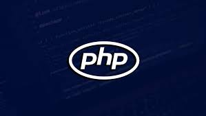

It shouldn't come as a surprise when you see JavaScript at the top of every recent list of the most complete programming languages. Thanks to its continued integration into the latest open source projects, JavaScript has experienced tremendous growth that not many of us expected from old people. There is more than one factor behind this recent trend of using JavaScript in open source projects.

With the start of the infamous Node JS runtime, developers can use this language in both the front and back end of their projects. In addition, over 94.9% of all websites use JavaScript. Therefore, new possibilities will be unlocked every day to develop something extraordinary. That is, most web developers adopt JavaScript, which she viewed as a redundant language for her recent open source contributions. With the growing momentum of JavaScript, today it is considered among the most popular programming languages.
One of the most used programming languages of our time, Python continues to maintain its place among Open Source contributors and will not disappear soon. Python, as a full language, can be used in many different types of projects including but not limited to developing APIs, crawlers, scrapers, backend systems, etc. You can even develop complex desktop applications with this popular dialect of computer languages.

Python is very much integrated into machine learning and data analytics, thanks to a large number of high-quality plug-ins and third-party libraries. Libraries like SciPY and Panda have a huge fan base and are exceptionally popular in the industry. The availability of third-party and type libraries is what makes Python one of the most popular programming languages today. Although it is not a fading suitable for handling applications that require low-level system processing, you can use this language for almost every type of open source project.
One of the best programming languages ever for the open source developer console, Java is still as community-friendly as it has been for decades. Since its appearance in the 1990s interpreters, Java has maintained its position as one of the most popular programming languages and for good reasons.

The JVM (Java Virtual Machine) model used in Java runs any program written in this language on almost every system. Other programming languages often don't match the ability of Java to expand even to more comprehensive applications. With one of the largest developer community, Java will undoubtedly maintain its position as one of the best programming languages for years to come. Industries usually pay extra attention to Java developers. So, developing a revolutionary open source application with it will put you in the limelight. This is why so many new open source developers along with Java are building their next dream project.
C language supplement, the pioneer of the most used programming languages in the modern world, C ++ will not be redundant in the coming decades. Every complex system in the world, from your operating system to the mainframe, uses C ++ in one form or another.

Even Google uses this language to run its most resource-intensive operations. C ++ gives you software developers access to very low-level system components out of the box, which are widely used in every type of our familiar embedded system. To achieve embedded systems like IoT devices and smart watches continue to rise in popularity, C ++ will be used more in the future. If you are a developer looking to break into the industry, only C ++ can help make the most expected progress. Moreover, if you are looking to build complex open source systems that solve the problem of modern times, you will not get anything that does better than C ++, one of the most involved programming languages.
Given that it's a much newer language than some other options, Swift will become very powerful in recent years. One of the latest programming languages has been the tremendous support it attributes to the convenience it provides to open source developers. The language behind most modern iOS apps, Swift has a lot to offer in terms of developing high-tech open source projects.

The range of iOS app building has contributed greatly to an increasing number of Swift developers as Apple's iPhone provides a position as one of the best mobile smartphones to date. Swift is clearly very understanding and expressive. It gives even the latest developers to run modern and flexible iOS apps. So, we can only expect a bright future for this amazing programming language.
One of the most used programming languages of this generation, Ruby was developed in the mid-1990s, but it has gotten most of its bad reputation over the past decades or so. It's an interpreted, dynamic, and object oriented language, very similar to Python and even feels the same in many ways.

With the start of powerful web frameworks like Ruby on Rails and Sinatra, Ruby started running most modern web applications before losing lights due to JavaScript stacks. Many popular modern web apps like Github, Airbnb, ASKfm, Goodreads, and Fiverr use sapphire in one way or another. Popular open source projects that use Ruby include Homebrew, Discourse, Metasploit Framework and many more. So, Ruby is the language you can learn if you want to start contributing to big open source projects from today.
Although it once lost its place as a de facto programming language for the web, PHP is still one of the most widely used programming languages worldwide. In order for no similar web language to PHP during the rapid growth of the Internet, PHP fed almost every modern web site until the emergence of newer web languages like JavaScript and Ruby.
Even as we speak, PHP is behind more than 40% of the total number of websites, thanks to the ever-increasing number of websites that use content management systems like Word Press and Drupal. If you think PHP is dead, you are completely wrong. Although the lights are relatively less, PHP will continue to evolve for years to come and maintain its position as one of the most prepared programming languages. When developing the next open source web project, if you are looking for a programming language with dynamic capabilities that blend neatly with powerful database processing features, then PHP should be working on your wish list.
C # is the best programming language from Microsoft's giant software. It is one of the best multi-model computer programming languages that can be used for many different projects. Although primarily designed for the Microsoft .NET framework, C # has faced other computing challenges that are highly demanding and has become one of the most popular programming languages.

The language itself is simple and modern, with the ability to allow developers to take an object-oriented approach absent in C. You can think of C # as a combination of C ++ and the Java language. C # icons are grouped like C ++ icons and have a syntax like Java. So, if you are a programmer with sufficient knowledge of Java and want his applications to be fast like C ++ applications, then C # is definitely the way to go. One of the best reasons for drifting to C # for your next open source project is that it gives you the ability to craft any app you want. An application from the complex web APIs to full desktop applications, C # expands the developer toolkit and can help gain a higher position in the open source community.